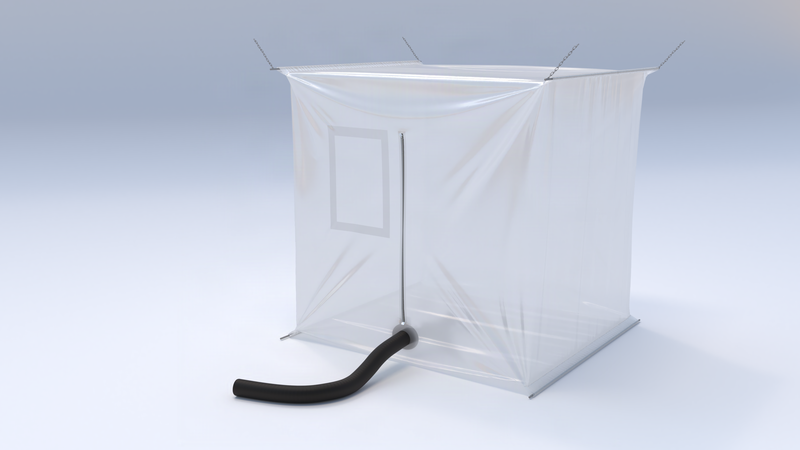

Containment packaging
Containment Bags, Liners & Enclosures
Specialised containment for liquids and powders, tailored to pharmaceutical, healthcare and speciality chemical sectors — from FIBC liners with sample-collection spouts to full containment cubicles.
Overview
Complex, customised containment — not off-the-shelf.
Designs range from 60 to 500 microns thickness, manufactured in our ISO 9001/14001/22000-certified facilities with rigorous raw material testing. Materials are available without additives where product purity requires it.
Past projects include FIBC liners with sample-collection spouts for pharma and speciality chemical clients, containment cubicles for agricultural testing, square IBC liners with specialised materials, foil barrier IBC liners for moisture-sensitive products, and servicing enclosure systems.



Applications
Where standard packaging isn't controlled enough.
Speciality & fine chemicals
FIBC liners with sample-collection spouts for chain-of-custody sampling requirements.
Pharmaceutical & healthcare
Controlled handling of powders and liquids where product purity and traceability matter.
Agricultural & environmental testing
Containment cubicles built for controlled sample collection in the field.
Moisture-sensitive products
Foil barrier IBC liners protect sensitive materials from moisture ingress in transit.
Benefits
Why regulated sectors specify us.
Additive-free options
Materials available without additives where product purity requirements demand it.
Full customisation
Multilayer options, O-ring sleeves, lanyards, eyelets, grommets and welded valves to your specification.
Recyclable materials
All materials are fully recyclable, with the exception of foil laminate options.
Proven in regulated sectors
Already supplied for pharmaceutical, agricultural testing and speciality chemical applications.
Technical information
Materials & specification
| Material | Thickness range | Typical use |
|---|---|---|
| Low-density polyethylene (LDPE) | 60–500 micron | General containment, additive-free options available |
| Woven fabric outer layer | — | Structural reinforcement for cubicles and enclosures |
| Antistatic film | — | Dust or static-sensitive powders |
| Nylon barrier film | — | Gas/odour barrier requirements |
| Foil laminate | — | Moisture-sensitive products (not recyclable) |
Product gallery & past projects
Containment in the field


Downloads
Spec sheets & brochures
Containment range overview
PDF · product range & specification
FAQs
Containment bag FAQs
Related products
You may also need


Need containment for a regulated product?
Tell us the product, purity requirement and volume — we’ll recommend a containment design.